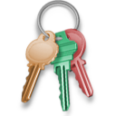

Практическая работа 4
Создание динамических HTML-документов с использованием
технологии Dynamic
Вариант 17
Отобразить в документе набор картинок в несколько рядов. Предоставить
возможность выделения прямоугольной области и выделения (например,
цветной рамкой вокруг картинки) тех картинок, которые попали в
очерченный мышью прямоугольник. Названия выделенных картинок при
щелчке на специальную ссылку объединить в список

